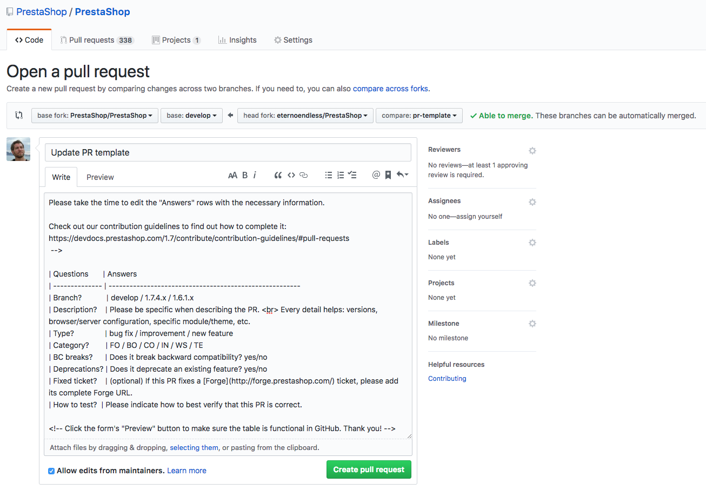

Ready to contribute code? Here’s what you need to know to get your Pull Request accepted.
In the past, we used to have only one commit by pull request. This was a bad habit. We now require contributors to make atomic commits, so you will surely have more than one commit in a single pull request. This will be helpful to review, cherry-pick or revert changes (we hope to never have to do that ).
What’s an atomic commit? It means that the commit’s purpose is one, and only one, complete fix or change. Typically, ask yourself if what you are doing is one or several tasks. Do not hesitate to use git add -p ... (details here) if you have made several changes in the same file but not all those changes are meant to be in the current commit.
In the past, we used to ask to prepend commit names with FO, BO, CO…
This is no longer needed.
The commit name should give an idea of the nature and context of the change that has been done. The more details, the better! The commit name should be as unique and recognizable as your commit itself. There are multitude of articles on the web regarding commit messages, here are two that you can find useful:
Bad commit messages give pretty much no context:
add cli newfix useless codefix code review commentsA good commit message explains what is done, and why:
Make Source.indexOf(ByteString) significantly faster
Previously the algorithm that did this was extremely inefficient, and
had worst case runtime of O(N * S * S) for N is size of the bytestring
and S is the number of segments.
The new code runs in O(N * S). It accomplishes this by not starting
each search at the first segment, which could occur many times when
called by RealBufferedSource.
Some tips:
Some source files like SCSS and JavaScript need to be compiled to work on a PrestaShop shop. To ease up the life of contributors who don’t want to fuzz around installing node and NPM, we require those files to be compiled and committed in the same Pull Request as the source changes.
Make sure to follow these guidelines:
Now that you have made atomic commits, you surely have a lot of commits for one pull request.
A pull request should answer to a single given issue. Do not ever make a single pull request for many purposes. Do not hesitate to split your big commit into several subprojects. It will be easier and quicker to review.
As all your commits messages are well-formatted, just make a summary of your pull requests purpose in its GitHub title. A summary does not mean it can not be explicit. Please describe what your pull request does in detail (avoid “Fix product page” or “Category page improvement”). Then, just fill the PR template table to answer some questions which will help the team make a decision faster.
Please note that all the pull requests must follow those guidelines. If the commit messages are not well-formatted, the pull request’s title is not correct, or the table is not properly filled, we will not be able to accept your pull request.
Code submitted through your Pull Request will be reviewed by PrestaShop maintainers. The code review process is generally regarded as a good practice and adopted by hundreds of software projects around the world. It provides lot of benefits: - it helps spotting errors in the code, because we all make mistakes and it’s very hard to find one’s own mistakes - it helps improving code quality not only by ensuring it’s readable and understandable, but also by pinpointing design, performance or security issues that may have been unintentionally introduced by the author - it helps spread knowledge of the code base, because the reviewer will learn how your code works too - and don’t forget that reviewing is a discussion, not a to-do list: the goal is to find the best solution by sharing different opinions
However, reviewing code is hard and can be exhausting. Making your pull request as easy as possible to review will help in getting it accepted swiftly. Completing the pull request form (explained below), properly explaining the reasons behind some of your technical choices, as well as any part of the code that could be tricky to understand… those are some examples of things that you can do to help ease up the process.
Also, please avoid submitting very large PRs when it can be avoided.
Remember: smaller changes are easier to review, easier to test and easier to merge.
When you create a new Pull Request, you will be presented with a form to complete that looks like this:

It is very important that you complete this table correctly, as it is vital for:
Pull requests must be made in the appropriate branch, depending on the nature of your change.
PrestaShop only accepts PRs on branches which are subject to new releases.
Once PrestaShop releases a new minor (“dot-zero”) version, it won’t release new patch versions for previous minor versions with the exception of rare cases, for example if a security bug is found just before or after a minor release is published.
This means that except for 1.6.1.x (on extended support), only the latest minor version patch branch is supported.
For example, the 1.7.4.x branch is supported until the release of version 1.7.5.0. After that, the only supported version branch will be 1.7.5.x, and so on.
If you find a bug on an unsupported version, make sure that bug is still present in the latest version. If the bug is still present, please submit a PR on develop.
PRs on unsupported versions will be closed.
When in doubt, use the develop branch. We will ask you to rebase on the correct branch if necessary.
The category is the portion of the project to which your changes apply to. We use this code to construct the change log by grouping changes in different sections. Choose the code that most closely describes your change:
| Code | Scope |
|---|---|
| FO | if the changes impact the Front Office |
| BO | if the changes impact the Back Office |
| IN | if the changes impact the Installer |
| WS | if the changes impact the Web Services |
| CO | if the changes impact the Core (non-visible functionality) |
| LO | if the changes impact localization functionality |
| TE | if the changes impact automated tests |
Remember, this is only needed for the Pull Request form, not for your commit messages.